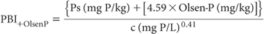

This method is identical to Method 9I2a in all respects, except for the final calculation, which uses Olsen-P (and an adjustment factor of 4.59 × Olsen-P; units of mg P/kg) in place of Colwell-P as the measure of current soil P fertility.
Proceed as for Method 9I2a (and Note 1 of this method).

Table 9.8. Data and calculatŠns required to calculate PBI+OlsenP.
where:
Ps = freshly sorbed P (mg P/kg); and
c = final solution P concentration (mg P/L)
Report PBI+OlsenP on an air-dry (40°C) basis.
1. Calculations can be conveniently performed on a computer spreadsheet. Guidance is provided in Table 9.8.
This method is identical to Method 9I2b in all respects, except for the final calculation, which uses Olsen-P (and an adjustment factor of 4.59 × Olsen-P; units of mg P/kg) in place of Colwell-P as the measure of current soil P fertility. The calculation (and Note 1) of Method 9I3a applies. The ‘finish’ includes all P in solution regardless of the chemical species present.
Report PBI+OlsenP on an air-dry (40°C) basis.
This method is identical to Method 9I2c in all respects, except for the final calculation, which uses Olsen-P (and an adjustment factor of 4.59 × Olsen-P; units of mg P/kg) in place of Colwell-P as the measure of current soil P fertility. The calculation (and Note 1) of Method 9I3a applies.
Report PBI+OlsenP on an air-dry (40°C) basis.